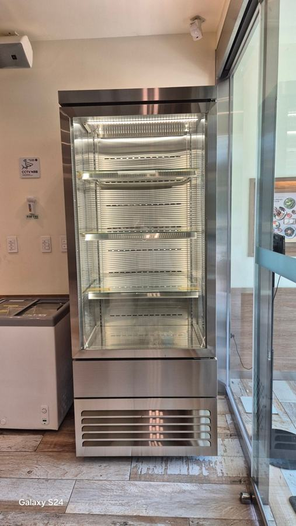
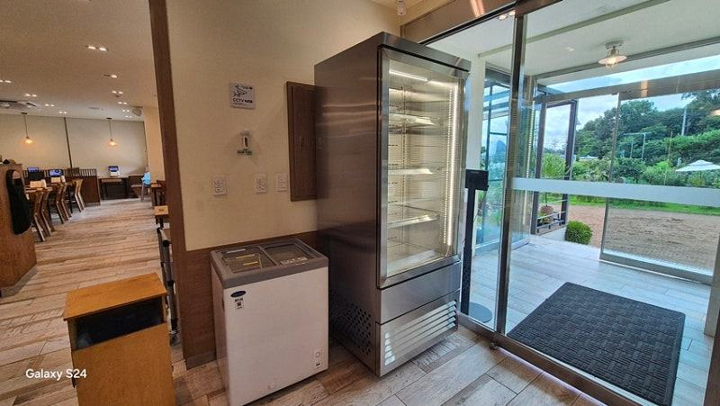
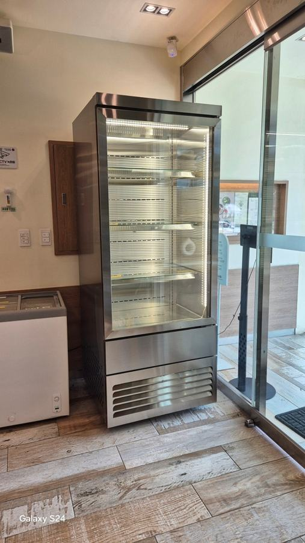
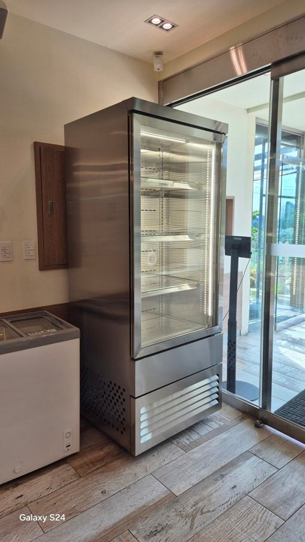
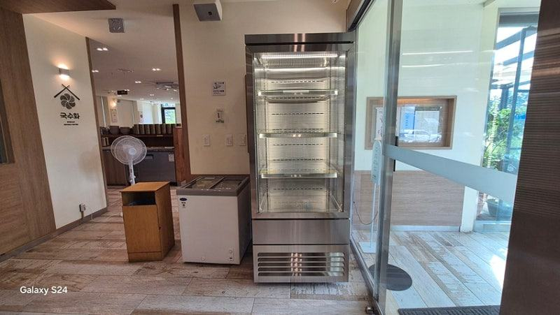
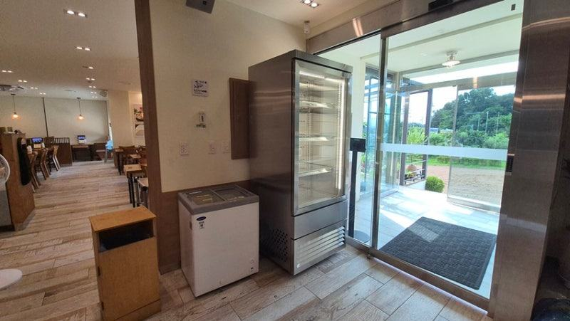
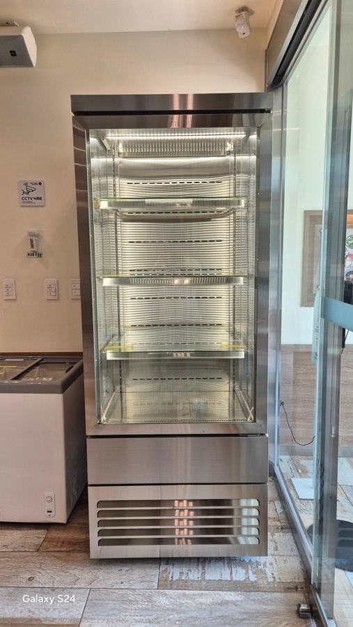

과일진열쇼케이스
과일쇼케이스 결로, 과일이 내뿜는 수분까지 생각해야 줄어듭니다

과일쇼케이스 결로는 유리 바깥에 생기는지, 안쪽에 생기는지, 포장 속에 생기는지에 따라 원인이 다릅니다. 바깥은 매장 습도와 유리 구조, 안쪽은 과일이 내는 수분과 문 개폐, 포장 속은 온도 차가 주원인이니 어디에 맺히는지부터 확인하세요.
안녕하세요. 과일가게와 청과 매장 쇼케이스를 매장에 맞춰 제작하는 한성쇼케이스입니다.
장마철만 되면 과일쇼케이스 유리에 물방울이 맺혀 안에 든 딸기와 포도가 잘 안 보인다는 말씀을 많이 듣습니다.
닦아도 금방 다시 생기니 장비가 고장 난 건 아닌지 걱정되시죠.
과일쇼케이스는 다른 냉장 진열장과 조금 다른 점이 있습니다. 과일은 수확한 뒤에도 호흡을 하며 수분을 내보내기 때문에, 바깥 습기뿐 아니라 상품 자체에서도 습기가 생깁니다.
오늘은 과일쇼케이스 결로를 생기는 위치별로 나눠 원인과 대처법을 정리해 보겠습니다.
1. 유리 바깥에 맺히는 결로
여름철 매장 안팎 온도 차가 커지면 차가운 유리 바깥면에 습기가 맺힙니다. 과일가게는 출입문을 열어 두고 영업하는 경우가 많아 바깥 습한 공기가 쇼케이스까지 그대로 들어오기 쉽습니다.
이 경우는 설치 자리와 유리 구조가 핵심입니다. 출입문 정면을 피하고, 새로 들이신다면 결로를 막는 열선이 유리에 적용돼 있는지 확인해 보세요.
열선 처리가 된 유리는 습한 날에도 시야를 확보하는 데 도움이 됩니다.
영업 중 바깥 결로는 마른 천으로 자주 닦아 주시는 것 외에는 자리와 유리 구조로 풀어야 하는 경우가 많습니다.
닦을 때 물이 하부 틈으로 흘러 들어가지 않도록 아래쪽부터 받쳐 닦아 주세요.
- 출입문 정면 자리는 피하세요.
- 결로 방지 열선 유리 여부를 확인하세요.
2. 유리 안쪽과 선반에 맺히는 결로
안쪽에 물방울이 생긴다면 내부 습기가 많다는 뜻입니다. 과일이 호흡하며 내는 수분, 씻어서 물기가 남은 과일, 문을 오래 열어 들어온 습한 공기가 원인인 경우가 많습니다.
씻은 과일은 물기를 충분히 말린 뒤 넣고, 과일을 빽빽하게 쌓지 말아 냉기가 돌 수 있게 해 주세요.
공기가 고이면 그 자리에 습기가 몰려 유리와 선반에 물이 맺히고, 맞닿은 과일부터 무르기 시작합니다.
- 씻은 과일은 물기를 말려서 넣으세요.
- 과일 사이에 공기 길을 남겨 두세요.
- 문은 짧게 여닫으세요.


3. 랩과 컵 포장 속에 생기는 물방울
컷과일 컵이나 랩 포장 과일은 포장 안쪽에 물방울이 생기기 쉽습니다. 상온에서 손질한 과일을 바로 포장해 차가운 쇼케이스에 넣으면 포장 안 공기가 식으면서 수증기가 물로 바뀝니다.
손질 후 잠시 식힌 뒤 포장하거나, 포장한 상품은 바람이 직접 닿지 않는 안쪽 칸에 두면 포장 속 결로를 줄일 수 있습니다.
포장 안이 뿌옇게 흐리면 손님이 과일 상태를 보지 못해 손이 덜 갑니다.
4. 냉각 방식과 과일 수분의 균형
직냉식은 벽면을 직접 차갑게 하는 방식이라 수분 유지에 유리하지만 성에가 생겨 주기적으로 제거해야 합니다.
간냉식은 팬으로 찬 바람을 순환시켜 온도가 고르고 성에가 덜 생기지만, 상품이 건조해지지 않도록 주의가 필요합니다.
과일은 너무 마르면 윤기를 잃고, 너무 습하면 무르기 때문에 한쪽만 볼 수 없습니다. 통과일 위주인지 컷과일 위주인지, 포장 비율이 어느 정도인지 알려 주시면 결로와 건조 사이 균형을 맞추는 구성을 함께 안내해 드립니다.
체크리스트
- 결로가 생기는 위치(바깥·안쪽·포장 속)
- 출입문과 쇼케이스 거리
- 결로 방지 열선 유리 여부
- 씻은 과일 물기 제거
- 과일 적재 간격
- 통과일·컷과일 비율과 냉각 방식
현장에서 자주 보는 경우: 디자인만 보고 들였다가 성에와 결로로 고생할 때
큰맘 먹고 장비를 들였는데 손님이 안에 뭐가 있는지 안 보인다고 하는 경우가 있습니다. 디자인만 보고 고른 뒤 성에와 결로로 시야가 가려지는 상황인데, 장마철에는 유리에 물이 흘러 내부 바닥이 흥건해지기도 합니다.
이럴 때 확인하는 것이 세 가지입니다. 판매 품목에 맞는 냉각 방식인지, 결로를 막는 열선 유리가 적용됐는지, 고장이 났을 때 가까운 곳에서 바로 A/S를 받을 수 있는지입니다.
쇼케이스냉동고 상담에서 정리한 기준이지만 습기에 민감한 과일쇼케이스에도 그대로 적용됩니다.








| 구분 | 직냉식 | 간냉식 |
|---|---|---|
| 원리 | 냉각 파이프가 벽면을 차갑게 만듦 | 팬이 찬 바람을 순환시킴 |
| 장점 | 가격 저렴, 수분 유지 탁월 | 균일한 온도로 성에 자동 제거 |
| 단점 | 성에 발생(주기적 성에 제거 필수) | 가격이 높음, 식품 건조 주의 |
자주 묻는 질문
결로가 생기면 과일이 더 빨리 상하나요?
물방울이 과일 표면이나 포장 안에 오래 머물면 무름과 곰팡이가 앞당겨질 수 있습니다. 물기가 닿은 과일은 앞쪽으로 빼서 먼저 판매하고, 원인을 함께 정리해 주세요.
기존 과일쇼케이스 유리에 열선을 추가할 수 있나요?
제품 구조에 따라 어렵거나 유리 교체가 필요할 수 있습니다. 모델과 사진을 보내 주시면 가능한 방법을 먼저 확인해 드립니다.
아침에만 유리가 뿌옇다가 오후엔 괜찮아요.
아침 환기나 청소로 매장 습도가 올라가는 시간과 겹치는 경우가 많습니다. 출입문을 여는 시간과 쇼케이스 위치를 조정해 보시고, 계속되면 점검을 받아 보세요.
매장 조건에 맞춰 만드는 한성쇼케이스
원하시는 제품 사진과 설치할 공간 사진만 보내 주셔도 매장에 맞는 구성을 추천해 드립니다.
- 전국 240여 개 A/S 전담 센터 운영
- 본사 대량 자재 매입으로 품질 대비 합리적인 가격
- 유럽제·삼성 냉각 콤프레셔 적용
- 국내 최초 쇼케이스 전문 디자이너 상주
매장 폭과 원하는 진열 구성을 알려 주세요. 실측과 견적을 안내해 드립니다.
031-986-2458